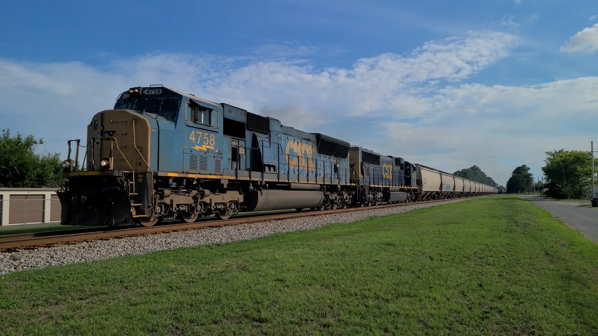
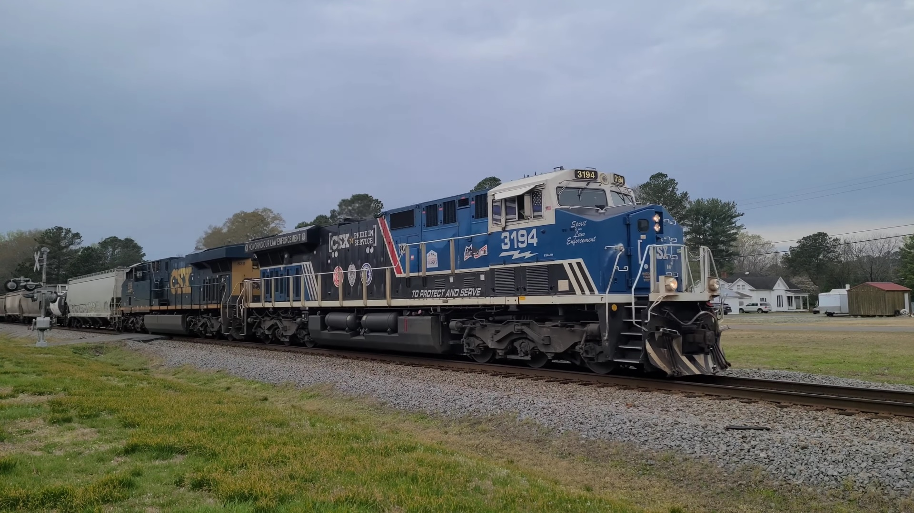

- Date: 6/29/2022
- Location: Elm City, NC
- Locomotives: GE ES44AH, GE ES40DC, EMD SD70MACe, EMD FP9-A, EMD FP9-A
- Notes: CSX heads south with ex-Pan Am FP9 units trailing

- Date: 7/12/2022
- Location: Benson, NC
- Locomotives: EMD SD70MAC, EMD SD70MACe
- Notes: A rare CSX duo pulls an empty grain train

- Date: 3/25/2023
- Location: Kenly, NC
- Locomotives: GE ES44AH, GE ES44AH
- Notes: CSX's police unit leads a short train